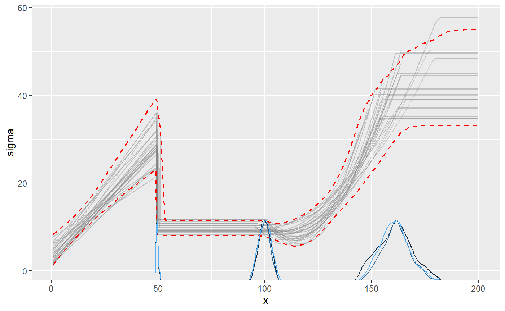

For GLM families with a variance parameter (sigma), you can model this explicitly. For example, if you want a flat mean (a plateau) with increasing variance, you can do y ~ 1 + sigma(1 + x). In general, all formula syntax that is allowed outside of sigma() (where it applies to the mean) also works inside it (applying to the variance). For example, if you go all-out, you can do ~ 1 + sigma(rel(1) + sin(x) + I(x^2)). Read more about mcp formulas here.
Simple example: a change in variance
Let us model a simple change in variance on a plateau model. First, we specify the model:
model = list( y ~ 1, # sigma(1) is implicit in the first segment ~ 0 + sigma(1) # a new intercept on sigma, but not on the mean )
We can simulate some data, starting with low variance and an abrupt change to a high variance at \(x = 50\):
empty = mcp(model, sample = FALSE, par_x = "x") set.seed(40) df = data.frame(x = 1:100) df$y = empty$simulate( df$x, cp_1 = 50, int_1 = 20, sigma_1 = 5, sigma_2 = 20) head(df)
## x y
## 1 1 22.38870
## 2 2 22.48091
## 3 3 15.70208
## 4 4 15.85470
## 5 5 18.39213
## 6 6 13.48115Now we fit the model to the simulated data.
fit = mcp(model, data = df, par_x = "x")
We plot the results with the prediction interval to show the effect of the variance, since it won’t be immediately obvious on the default plot of the fitted mean predictions:
plot(fit, q_predict = TRUE)

We can see all parameters are well recovered (compare sim to mean). Like the other parameters, the sigmas are named after the segment where they were instantiated. There will always be a sigma_1.
summary(fit)
## Family: gaussian(link = 'identity')
## Iterations: 9000 from 3 chains.
## Segments:
## 1: y ~ 1
## 2: y ~ 1 ~ 0 + sigma(1)
##
## Population-level parameters:
## name match sim mean lower upper Rhat n.eff
## cp_1 OK 50 49.8 46.1 54.9 1 1144
## int_1 OK 20 20.3 18.8 21.9 1 5070
## sigma_1 OK 5 5.6 4.5 6.9 1 3149
## sigma_2 OK 20 19.0 15.3 22.8 1 4318Advanced example
We can model changes in sigma alone or in combination with changes in the mean. In the following, I define a needlessly complex model, just to demonstrate the flexibility of modeling variance:
model = list( # Increasing variance. y ~ 1 + sigma(1 + x), # Abrupt change in mean and variance. ~ 1 + sigma(1), # Joined slope on mean. variance changes as 2nd order poly. ~ 0 + x + sigma(0 + x + I(x^2)), # Continue slope on mean, but plateau variance (no sigma() tern). ~ 0 + x ) # The slope in segment 4 is just a continuation of # the slope in segment 3, as if there was no change point. prior = list( x_4 = "x_3" )
Notice a few things here:
- Segment 3 and 4: I changed the variance on a continuous slope. You can do this using priors to define that the slope is shared between segment 3 and 4, effectively canceling the change point on the mean (more about using priors in mcp here).
- Segment 4: By not specifying
sigma(), segment 4 (and later segments) just inherits the variance from the state it was left in in the previous segment.
In general, the variance parameters are named sigma_[normalname], where “normalname” is the usual parameter names in mcp (see more here). For example, the variance slope on x in segment 3 is sigma_x_3. However, sigma_int_i is just too verbose, so variance intercepts are simply called sigma_i, where i is the segment number.
Simulate data
We simulate some data from this model, setting all parameters. As always, we can fit an empty model to get fit$simulate, which is useful for simulation and predictions from this model.
empty = mcp(model, sample = FALSE) set.seed(40) df = data.frame(x = 1:200) df$y = empty$simulate( df$x, cp_1 = 50, cp_2 = 100, cp_3 = 150, int_1 = -20, int_2 = 0, sigma_1 = 3, sigma_x_1 = 0.5, sigma_2 = 10, sigma_x_3 = -0.5, sigma_x_3_E2 = 0.02, x_3 = 1, x_4 = 1)
Fit it and inspect results
Fit it in parallel, to speed things up:
fit = mcp(model, data = df, prior = prior)
Plotting the prediction interval is an intuitive way to to see how the variance is estimated:
plot(fit, q_predict = TRUE)

We can also plot the sigma_ parameters directly. Now the y-axis is sigma:
plot(fit, which_y = "sigma", q_fit = TRUE)

summary() show that the parameters are well recovered (compare sim to mean). The last change point is estimated with greater uncertainty than the others. This is expected, given that the only “signal” of this change point is a stop in variance growth.
summary(fit)
## Family: gaussian(link = 'identity')
## Iterations: 9000 from 3 chains.
## Segments:
## 1: y ~ 1 + sigma(1 + x)
## 2: y ~ 1 ~ 1 + sigma(1)
## 3: y ~ 1 ~ 0 + x + sigma(0 + x + I(x^2))
## 4: y ~ 1 ~ 0 + x
##
## Population-level parameters:
## name match sim mean lower upper Rhat n.eff
## cp_1 OK 50.00 49.837 49.0002 51.281 1 2698
## cp_2 OK 100.00 99.894 93.8717 105.951 1 605
## cp_3 OK 150.00 162.020 144.3638 180.620 1 176
## int_1 OK -20.00 -20.408 -23.5411 -17.408 1 4884
## int_2 OK 0.00 1.422 -1.3912 4.068 1 1502
## sigma_1 OK 3.00 3.471 0.3216 7.420 1 1073
## sigma_2 OK 10.00 9.656 7.8959 11.358 1 1054
## sigma_x_1 OK 0.50 0.542 0.3262 0.757 1 1332
## sigma_x_3 OK -0.50 -0.241 -0.6663 0.096 1 117
## sigma_x_3_E2 OK 0.02 0.013 0.0041 0.027 1 120
## x_3 OK 1.00 0.925 0.7706 1.093 1 1107
## x_4 OK 1.00 0.925 0.7706 1.093 1 1107The effective sample size (n.eff) is fairly low, indicating poor mixing for these parameters. Rhat is acceptable at < 1.1, indicating good convergence between chains. Let us verify this by taking a look at the posteriors and trace. For now, we just look at the sigmas:
plot_pars(fit, regex_pars = "sigma_")

This confirms the impression from Rhat and n.eff. Setting mcp(..., iter = 10000) would be advisable to increase the effective sample size. Read more about tips, tricks, and debugging.
Varying change points and variance
The variance model applies to varying change points as well. For example, here we do a spin on the example in the article on varying change points, and add a by-person change in sigma. We model two joined slopes, varying by id. The second slope is also characterized by a different variance. This means that the model has more information about when the change point occurs, so it should be easier to estimate (require fewer data).
model = list( # intercept + slope y ~ 1 + x, # joined slope and increase in variance, varying by id. 1 + (1|id) ~ 0 + x + sigma(1) )
Simulate data:
empty = mcp(model, sample = FALSE) set.seed(40) df = data.frame( x = 1:180, id = rep(1:6, times = 30) ) df$y = empty$simulate( df$x, cp_1 = 70, cp_1_id = 15 * (df$id - mean(df$id)), int_1 = 20, x_1 = 1, x_2 = -0.5, sigma_1 = 10, sigma_2 = 25)
Fit it:
fit = mcp(model, data = df)
Plot it:
plot(fit, facet_by = "id")

As usual, we can get the individual change points:
ranef(fit)
## name match sim mean lower upper Rhat n.eff
## 1 cp_1_id[1] OK -37.5 -37.218635 -43.557178 -31.674384 1.0007450 1952
## 2 cp_1_id[2] OK -22.5 -16.561347 -22.970395 -10.332305 1.0006686 3796
## 3 cp_1_id[3] OK -7.5 -9.366719 -15.557923 -2.794371 1.0009795 3397
## 4 cp_1_id[4] OK 7.5 9.098475 3.687331 14.319768 0.9998623 3183
## 5 cp_1_id[5] OK 22.5 16.967768 10.676052 23.424677 1.0003808 4189
## 6 cp_1_id[6] OK 37.5 37.080458 30.609926 44.087985 1.0019319 2063